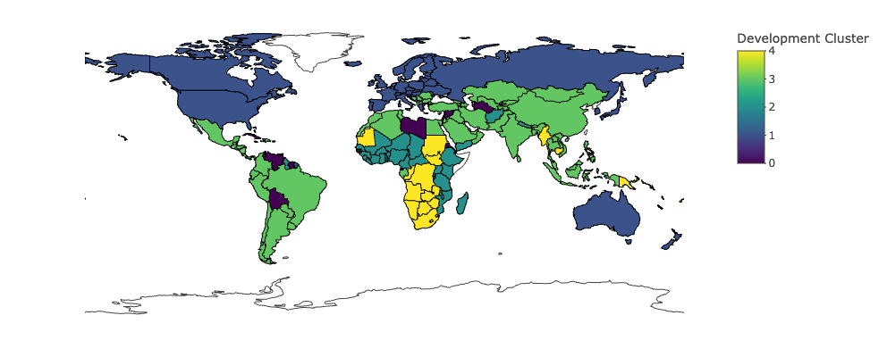
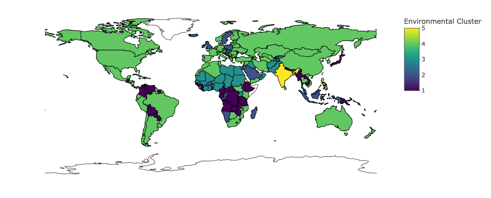
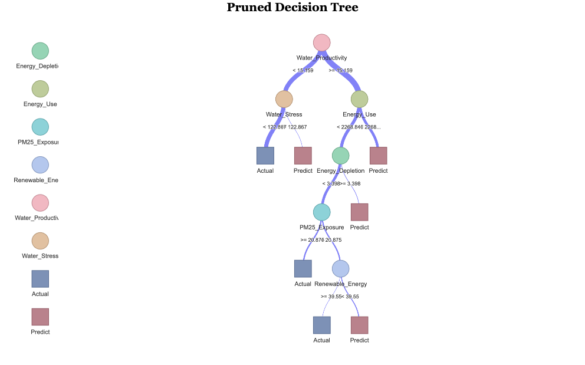
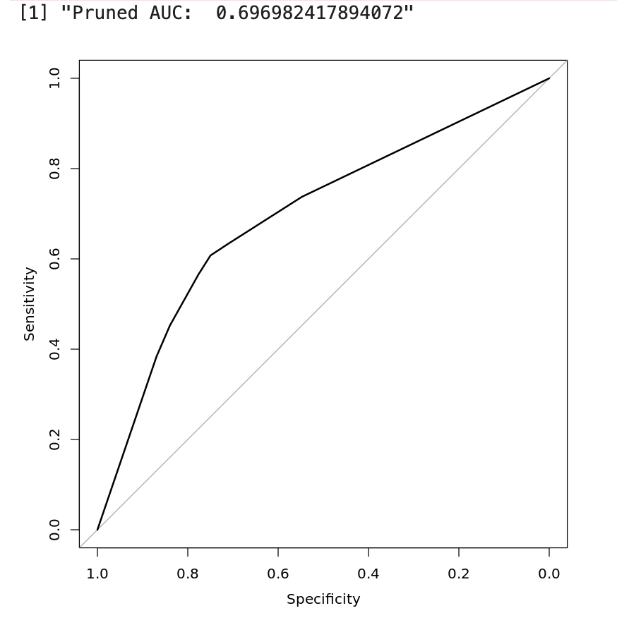

This project explores the relationship between socio-economic development and environmental sustainability across 200+ countries using World Bank data spanning 1990–2023. The central question: do countries cluster into distinct development-environment profiles, and do those profiles predict sustainability-related outcomes?
The analysis proceeds in two phases: an unsupervised clustering phase to identify latent country groupings, and a supervised regression phase to test whether cluster membership and continuous development indicators explain environmental outcomes. Decision tree models are used alongside linear regression to capture non-linear relationships.
The dataset includes socio-economic indicators (GDP per capita, life expectancy, literacy, urbanization) and environmental indicators (renewable energy share, fossil fuel dependence, CO₂ emissions, CH₄ emissions, forest area, water stress). Missing values were imputed using forward-backward filling and the MICE (Multiple Imputation by Chained Equations) technique to preserve temporal structure without introducing bias.
Two separate clustering models were built — one on development indicators, one on environmental indicators — to allow cross-tabulation and analysis of how development clusters map onto environmental clusters.
The optimal number of clusters was determined via the elbow method applied to within-cluster sum of squares. Both hierarchical clustering (Ward's linkage) and K-Means (k=4) were tested; K-Means at k=4 produced more interpretable, balanced groupings.
Four development clusters identified:
Noteworthy finding: the most developed cluster (Cluster 1) is not the most environmentally sustainable — it carries the highest absolute fossil fuel dependence alongside its renewable energy lead, reflecting the energy-intensity of developed economies.

Development cluster distribution

Environmental cluster distribution
Multiple regression models tested whether GDP per capita, fossil fuel use, and renewable energy share predict CO₂ emissions, controlling for cluster membership. Key correlation findings: weak GDP–fossil fuel relationship (r=0.15), moderate GDP–renewable energy relationship (r=−0.33), moderate CO₂–CH₄ overlap (r=0.28), reflecting the distinct origins of industrial vs. agricultural emissions.
Decision trees were used to model the non-linear decision boundaries between sustainability outcomes. Pruning via cross-validated cost-complexity was applied to prevent overfitting — the pruned tree trades some training accuracy for better generalization and interpretability.

Pruned decision tree — sustainability outcome classification

AUC evaluation — pruned decision tree